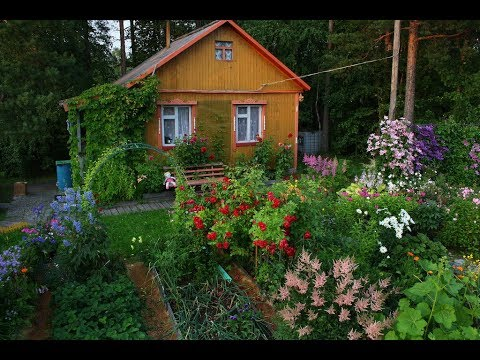
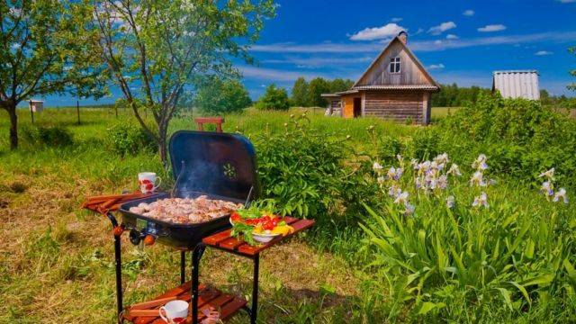
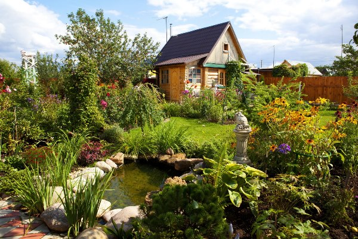

На даче все время найдется работа — прополоть, высадить, надрезать, подвязать, прибить и так далее. А это уже изящная возможность для физического развития — чем не зарядка? Вот настолько вообще ненавязчиво можно собственного офисного мужа приучить к физическому труду. И для вас отлично, и ему польза. При этом, даже если ваш мужчина не будет помогать сажать грядки, можно поручить ему подметать дорожки либо убирать листву. А уж сходить пешком в магазин за чем-нибудь вкусненьким и вовсе будет ему не сложно.
В жаркие дни будет здорово вдвоем сходить скупаться на речку. А вечером можно будет пожарить шашлык на приусадебном участке. Во время дачного отдыха можно вырастить собственные овощи, собрать сбор ягод и фруктов, из которых впоследствии получаются отличные кулинарные шедевры в виде заготовок на зиму: варенья и соленья. К тому же пища на свежем воздухе кажется вдвойне вкуснее и это непременно оценит ваш муж. Отдых на даче дозволяет получить заряд позитивных чувств, а вдалеке от муниципального шума гарантирован здоровый и крепкий сон.
Почему-то шашлык на природе всегда намного вкуснее, чем если ты готовишь мясо дома на сковороде. Сейчас практически нет таких людей, кто бы не любил такого рода угощение. Желательно, чтобы у тебя был свой проверенный рецепт маринования мяса и овощей, а также человек, который хорошо и быстро умеет готовить шашлык. Лучше, если ты будешь уметь делать его самостоятельно, чтобы тебе не приходилось каждый раз ждать этого самого человека. Помимо мяса у тебя должна быть жидкость для розжига, спички, дрова или щепа, а также уголь.
В связи с этим нужно напомнить, что для приготовления шашлыка требуется установка мангала. Конечно, можно пойти в магазин и взять дешёвый вариант, который состоит из тонких металлических планок, которые собираются в незатейливую конструкцию, на которой можно пожарить мясо. Но такого мангала вряд ли хватит тебе на много раз, дачный сезон не длится одну неделю, поэтому лучше сделать качественный мангал. Его можно заказать, а можно построить самостоятельно. Кто-то делает мангалы из кирпичей, а кто-то просто предпочитает заказать установку у опытных мастеров.
Организация огорода – это дело ответственное и не такое простое, как может показаться на первый взгляд. Здесь важно успеть посеять рассаду вовремя, следить за растениями, заблаговременно их поливать, и всячески ухаживать, не давая вредителям уничтожить растения. Огород – это не только полезно, но и к тому же может быть прибыльно. Если, допустим, у тебя будет хороший урожай, то излишки можно продавать, и если у тебя будет нечего есть, то ты будешь обеспечен продуктами и не умрёшь с голоду, что тоже большой плюс.
Если ты хочешь превратить дачный участок в сказочный сад, то надо купить семена цветов, и высадить их так, как тебе хочется, чтобы сад выглядел в будущем. Если ты поищешь информацию в интернете, то сможешь увидеть, как много сейчас красивых участков, и организовать это не так сложно, как тебе кажется. Но в наши неспокойные времена лучше всего, если ты будешь сажать не только цветы, но и овощи, фрукты и ягоды. Ведь это прежде всего источники питания, и если будет дефицит продуктов, то ты сможешь обеспечить себя надолго, так как овощи и фрукты можно консервировать. (если ты конечно успел купить сахар).